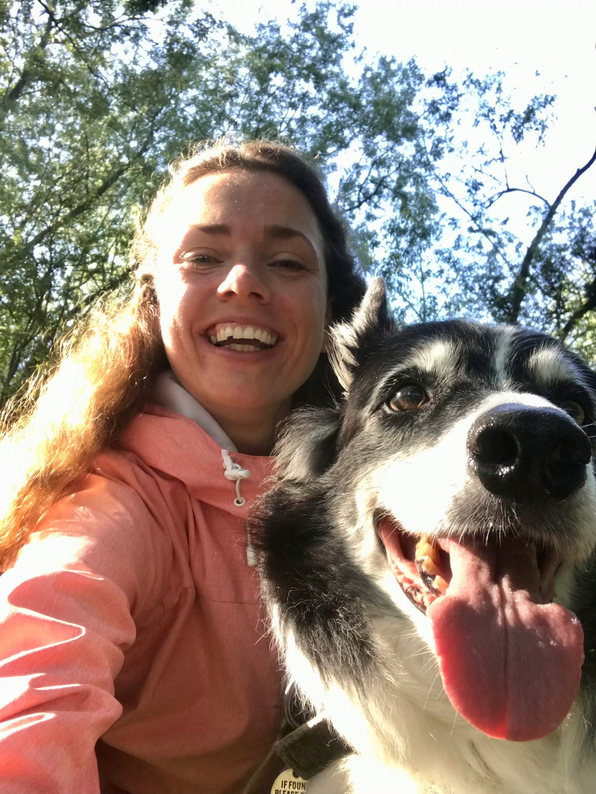
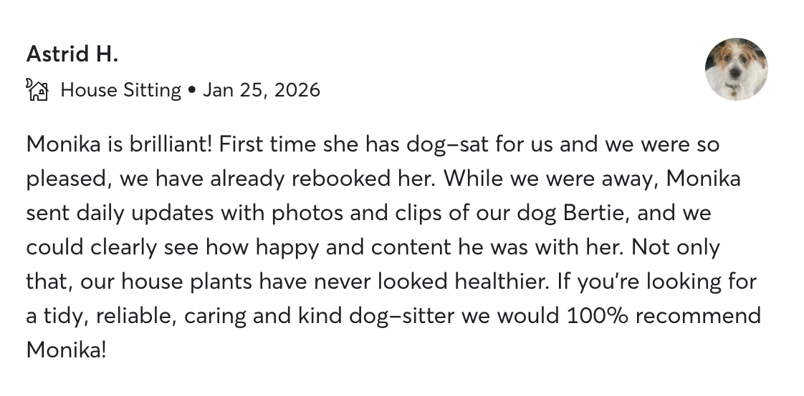
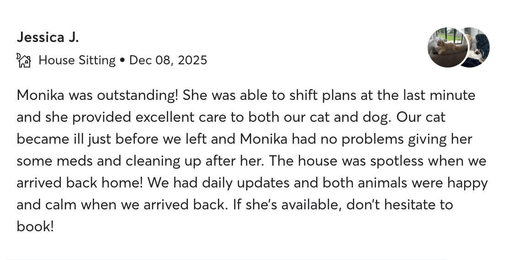
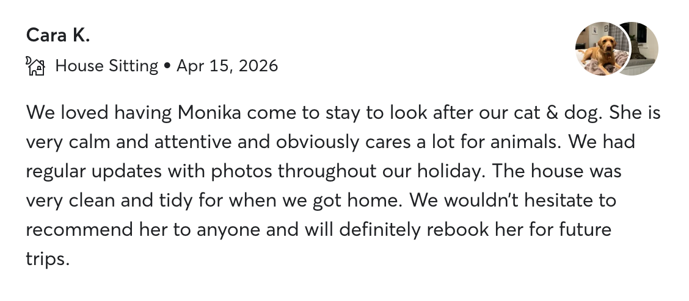
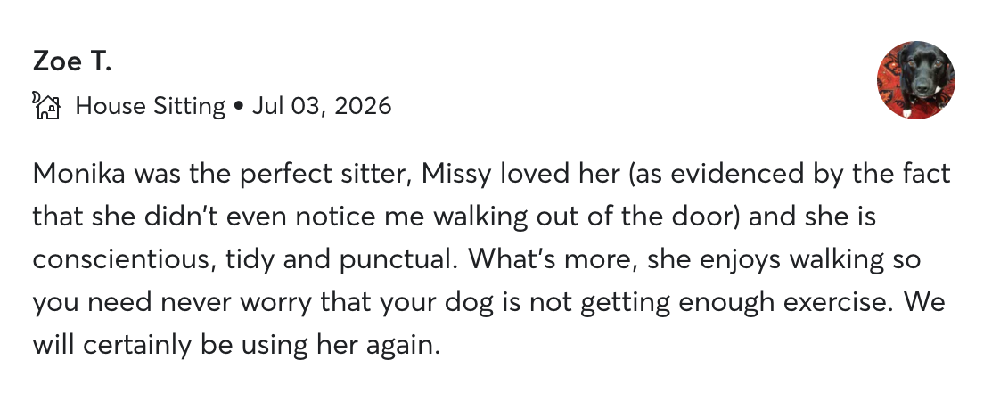
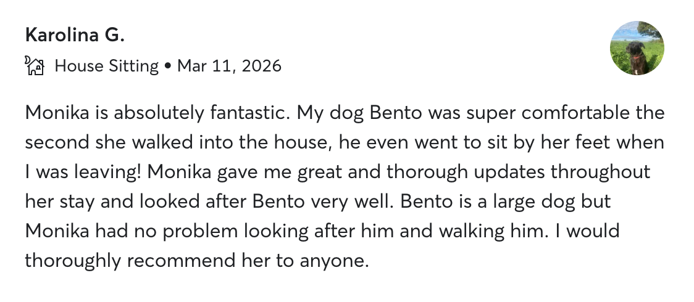
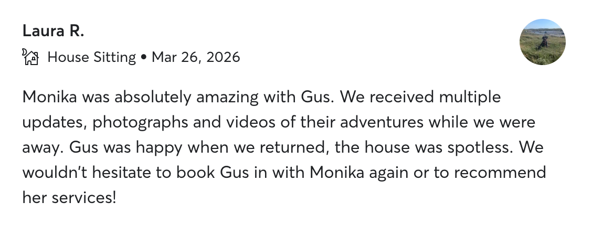

🐾
Their Routine, Kept
Your pets' familiar feeding, walking, playtime and bedtime routines are maintained, following your instructions and their individual needs.
Keeping pets in the comfort of their own home allows them to maintain the familiar routines, surroundings and everyday comforts that help them feel safe, content and well looked after. As a registered, fully insured and DBS-checked professional pet sitter, I provide dedicated in-home pet and house sitting, giving you complete peace of mind while you're away.

Every pet deserves to feel loved, safe and well looked after.
As a professional in-home pet sitter, I provide dedicated pet and house sitting that allows your pets to stay where they're happiest—at home.
By maintaining your pets' familiar routines, surroundings and everyday comforts, I provide the consistency, companionship and dedicated care that help them feel content, loved and very well cared for throughout your time away.
For you, that means complete peace of mind, knowing your beloved pets are happy, your home remains secure, and everything is being cared for with professional care and attention until you return.
Hello, I'm Monika, and welcome to Clover Pet & House Sitting.
With over eight years of professional pet and house sitting experience, I've cared for dogs, cats and small animals of all ages and needs.
My priority is always to provide calm, reliable care that helps pets feel safe, content and well looked after in the comfort of their own home.
As a registered, fully insured and DBS-checked professional pet sitter, I'm qualified in Pet First Aid and CPR, experienced in caring for senior and special-needs pets, and confident in administering medication.
Alongside my professional work, I've been a dedicated lead volunteer with Coppershell Animal Rescue for several years, where I've also gained valuable hands-on experience caring for farm animals.
Before dedicating myself fully to professional pet care, I spent several years working as a property manager, gaining valuable hands-on experience in managing residential homes and a thorough understanding of the practical responsibilities involved in keeping homes secure and well maintained.
Monika exceeded any expectations I could have had… From our first meet and greet I felt assured that I have found the ‘right' person — and this indeed turned out to be the case.
In-home pet and house sitting provides your pets with the comfort of remaining in their own home while receiving dedicated one-to-one care. By staying in your home throughout your time away, I maintain your pets' routines, keep your home secure, and send you regular updates, so you can relax knowing your pets are happy, safe and well cared for.
Your pets' familiar feeding, walking, playtime and bedtime routines are maintained, following your instructions and their individual needs.
You'll receive regular updates with photos and videos, so you can see how happy and content your pets are.
Experienced in medication administration and caring for senior and special-needs pets, always with calm, patience and compassion.
Your home remains secure, lived-in and well maintained, with everyday household tasks that keep everything running smoothly taken care of.
From small to giant breeds, pets of all ages, sizes and personalities are welcome.
Every booking is individually tailored, with pricing based on your pets, their care needs, your booking dates and your location.
Tell me a little about your pets, your travel dates and the care you're looking for using the contact form.
We'll begin with a video call to discuss your pets, their individual needs and make sure we're the right fit. Where location and availability allow, we'll then arrange a personal meet & greet at your home before the booking begins.
Once you're happy to go ahead, I'll send your invoice. After payment is received, your booking is confirmed. Should your plans change, cancellations made more than seven days before the booking start date are fully refundable. Please see the Terms & Conditions for full details.
Relax knowing your pets are happy and well cared for in the comfort of their own home, while your home remains secure and well looked after. You will receive regular updates, photos or videos throughout your booking.
Booking directly with me means a personal, one-to-one service from your first enquiry to your return home.
Please get in touch with a few details about your pets, their individual care needs and your travel dates, and I'll get back to you with my availability and a personalised quote soon.






All screenshots come from verified reviews of completed sittings · 50+ further five-star references from happy pet owners available on request.
I've been lucky enough to share so many happy moments with the pets I've cared for. Here are just a few of them.
Booked dates are confirmed sittings. If your preferred dates are close to a booked period, please do get in touch, plans can occasionally change. The calendar is updated regularly.
Based in Frome, I provide professional in-home pet and house sitting across Somerset and Wiltshire. I travel to locations that are accessible by public transport.
I'd love to hear about your pets, your travel plans and the care you're looking for. Please complete the form below, and I'll be in touch shortly.
Prefer to email me directly?
You can reach me at cloverpetsit@gmail.com